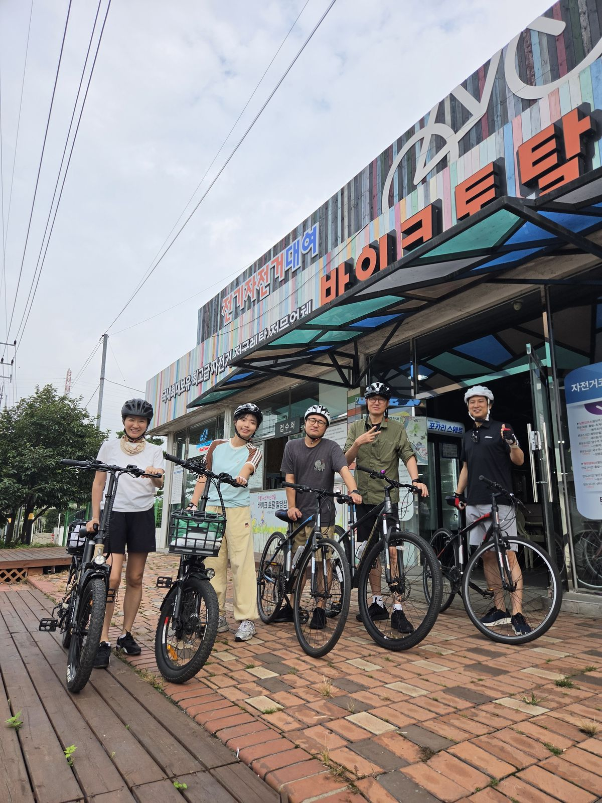
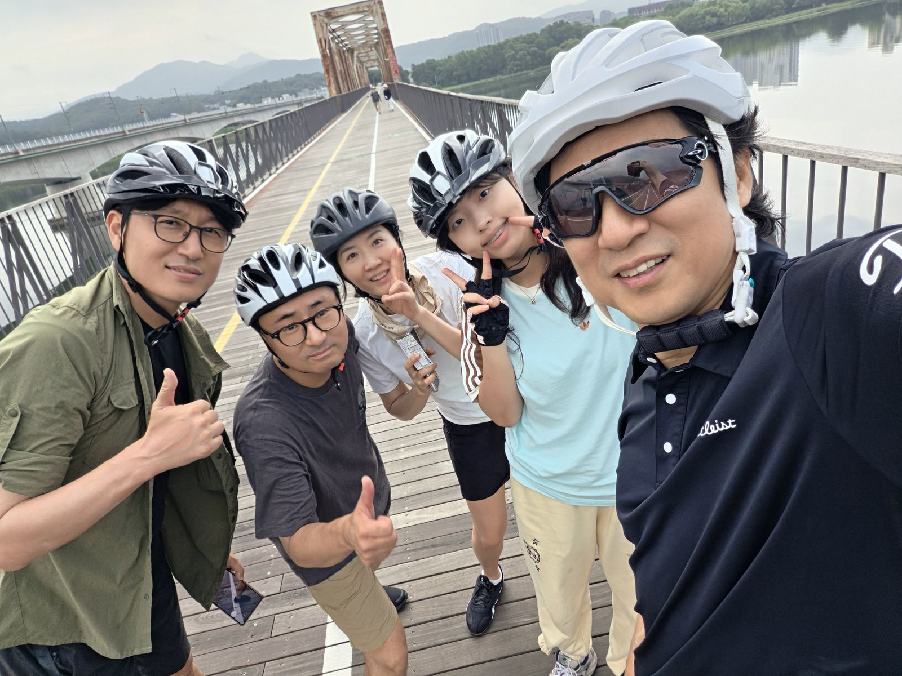
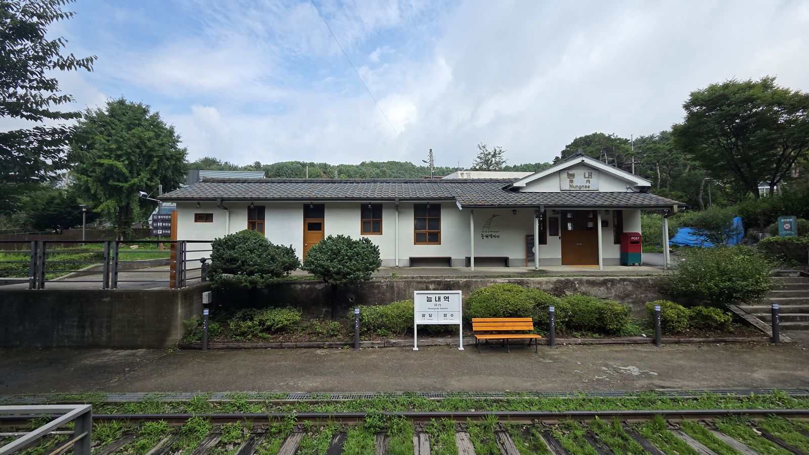
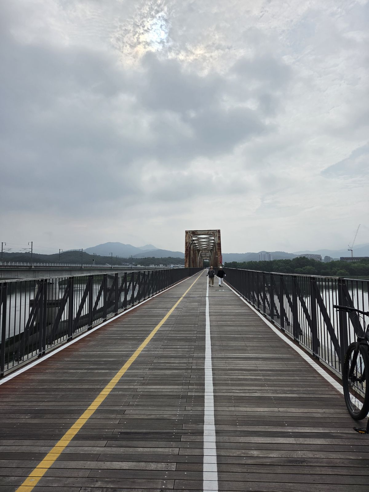
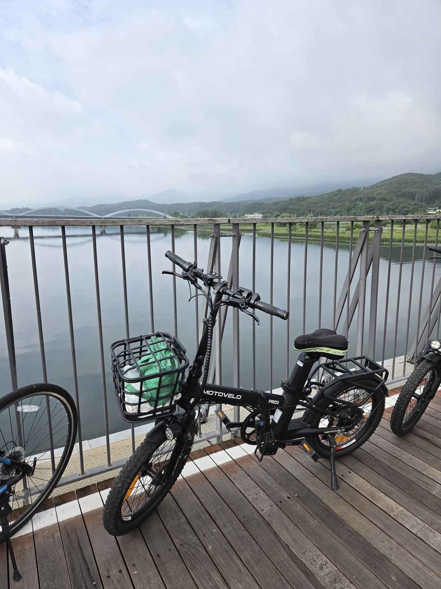
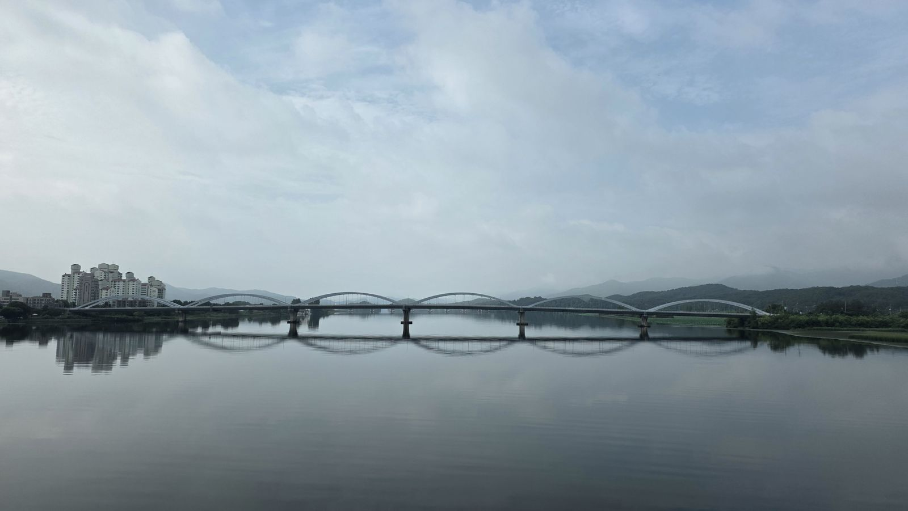
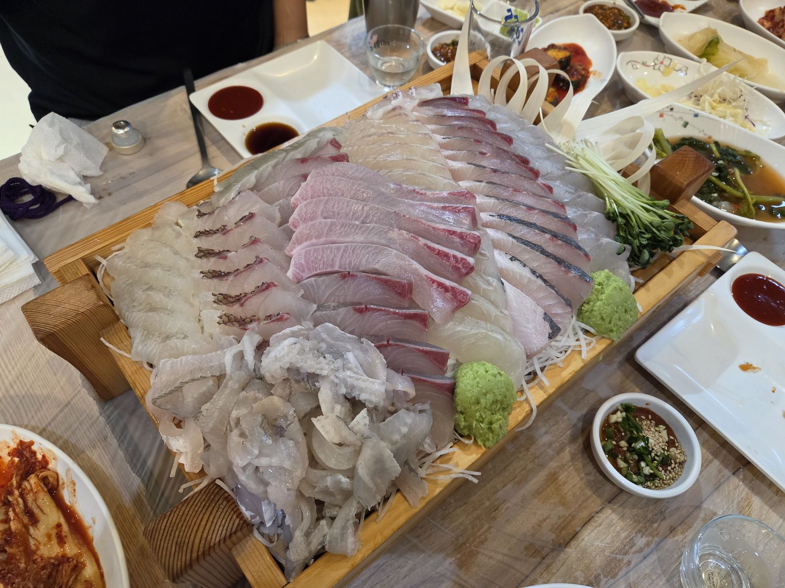
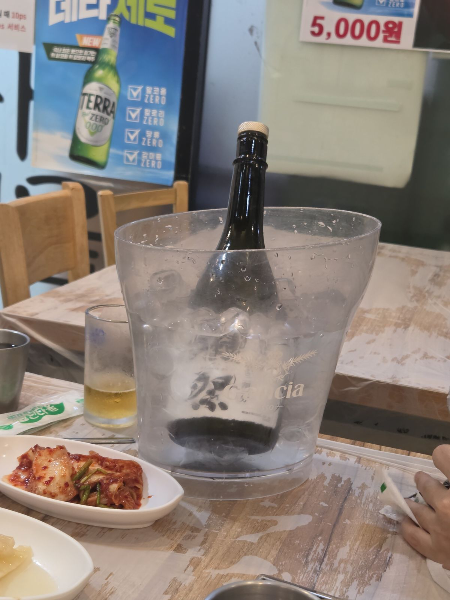
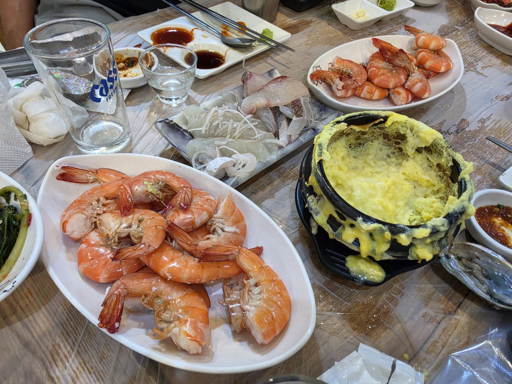
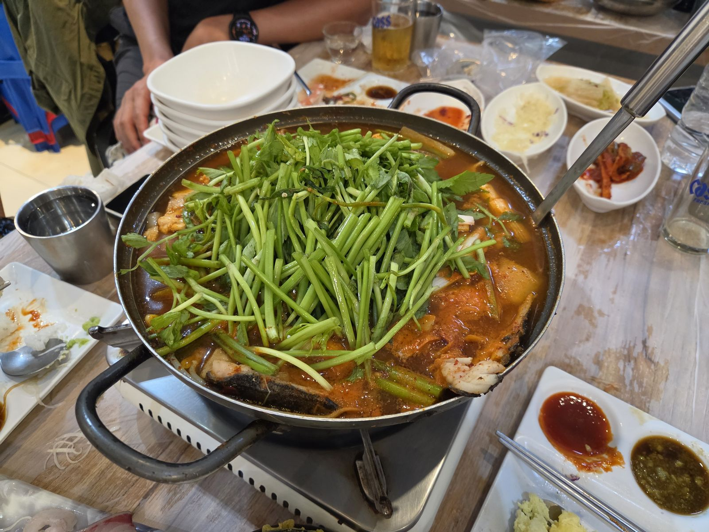

기상청은 오전 강수확률 60%, 예상 강수량 20~60mm를 예보했습니다.
우리는 우비를 챙기고, 시나리오를 셋으로 나누고, 능내역에서 판단하기로 정해두고 출발했습니다.
그리고 비는 한 방울도 오지 않았습니다. 대신 얇게 구름이 깔려, 8월 말 라이딩에서 상상할 수 있는
가장 좋은 조건이 됐습니다. 준비한 것 중 쓴 건 거의 없었지만 —
덕분에 아무도 걱정하지 않았습니다.
숫자 하나는 버렸습니다 — 최고 속도.
기록을 그대로 계산하면 복귀 09:54에 30초 평균 40.8km/h가 나옵니다. 그런데 그 30초 안에
초당 538km/h짜리 점이 섞여 있습니다. 앞뒤 1분 구간은 22km/h대인데 그 30초만 튄 것이니,
터널을 막 빠져나온 자리에서 GPS가 한 번 점프한 것입니다.
손목 GPS로는 순간 최고 속도를 신뢰할 수 없어서 이 페이지에는 최고 속도를 싣지 않았습니다.
위 그래프의 속도는 튐에 덜 흔들리도록 60초 이동평균으로 그렸고,
거리·평균 속도는 초당 60km/h를 넘는 점 43개를 걸러낸 뒤 계산했습니다.
워치가 표시한 거리는 21.24km, 튐을 걸러 좌표를 다시 적분하면 20.71km입니다.
상승고도 55.8m, 고도 21~48m — 사실상 평지였고, 그래서 전기자전거의 힘이 남았습니다.
02
계획 대 실제
전부 앞당겨졌습니다. 팔당역에 30분 일찍 닿으면서 그 뒤가 전부 밀려 올라갔고,
결국 계획보다 45분 이른 완주가 됐습니다. 비를 대비해 넣어둔 여유가 고스란히 남은 셈입니다.
구간
계획
실제
차이
성복역 출발
06:35
06:35
정시
정자역 경유
06:55
06:55
정시
바이크토탈 도착
08:00
07:30
−30분
자전거 대여
08:15
07:40
−35분
라이딩 출발
08:35
08:06
−29분
봉안터널
08:54
08:41
−13분
능내역
09:04
08:48
−16분
북한강철교 반환
09:25
09:16
−9분
팔당역 반납
10:50
10:09
−41분
가락몰 도착
11:45
11:00
−45분
날씨
비 60% · 20~60mm
흐림 · 0mm
완승
세 개의 시나리오 중 A였습니다. 능내역에서 판단할 것도 없었고,
봉안터널은 지붕이 아니라 그냥 시원한 터널이었고, 우비는 가방에서 나오지 않았습니다.
계획이 빗나간 게 아니라, 가장 좋은 가지가 선택된 것입니다.
03
그날의 진행
실제로 일어난 순서입니다. 회색 글씨가 원래 계획이었던 시각입니다.
06:35
성복역 출발
계획대로. 비 예보 때문에 다들 조금 긴장한 채로 계획 06:35 · 정시
06:55
정자역 경유
한 명 태우고 곧장 팔당으로 계획 06:55 · 정시
07:30
바이크토탈 팔당점 도착
예상보다 30분 빠른 도착. 토요일 이른 아침 도로가 생각보다 더 비어 있었습니다.
대여 시작을 기다리며 굴을 까먹으며 시간을 보냈습니다 — 오늘 하루 중 가장 예상 밖의 장면 계획 08:00 · 30분 빠름
07:40
자전거 대여 · 5대
전기자전거 2대 · 일반자전거 2대 · 26인치 대형 1대. 총 82,000원 계획 08:15 · 35분 빠름
08:06
라이딩 출발
워치 기록이 시작된 시각. 여기서부터 2시간 2분 계획 08:35 · 29분 빠름
08:41
봉안터널 4.0km
비를 피할 지붕으로 계산해뒀던 곳. 그냥 시원하게 지나갔습니다 계획 08:54
08:48
능내역 통과 5.5km
2차 판단 지점이었지만 판단할 게 없었습니다. 그대로 통과 계획 09:04
09:16
북한강철교 — 반환점 10.3km
출발점에서 직선거리 6.6km. 나무 데크 위에서 단체 사진.
강은 유리처럼 잔잔했고, 구름이 산 능선에 걸려 있었습니다 계획 09:25
09:47
능내역 복귀 휴식 15.2km
여기서 한 번 쉬고 마지막 5km 계획 10:00
10:09
팔당역 반납 왕복 21.2km
완주. 아무도 처지지 않았고, 비는 끝내 오지 않았습니다 계획 10:50 · 41분 빠름
11:00
가락몰 도착
여기서 오늘의 유일한 삽질이 있었습니다 — 아래 06 참고 계획 11:45 · 45분 빠름
13:00
종료
청해수산에서 회를 사서 서울식당에서 두 시간. 닷사이 23과 국화주
04
사진
누르면 크게 열립니다.

출발선07:40 · 바이크토탈 팔당점
다섯 명, 다섯 대. 헬멧까지 쓰고 나면 되돌릴 수 없습니다.

오늘의 대표 컷09:16 · 북한강철교 · 10.3km
반환점. 여기까지 오면 남은 건 왔던 길뿐이라, 표정이 제일 편한 순간입니다.

능내역08:48 통과 · 09:47 휴식
비가 오면 여기서 접기로 했던 곳. 폐역 승강장과 역명판이 그대로 남아 있습니다.

마르고 조용했던 상판09:15
계획서에서 “젖으면 가장 미끄럽다”고 세 번 강조했던 데크. 뽀송했습니다.

끝내 쓰지 않은 우비바구니 속 초록 봉투
전기자전거 바구니에 우비와 물이 그대로. 오늘 가장 기분 좋은 낭비였습니다.

거울이 된 강09:20 전후
바람이 없으니 아치가 통째로 물에 내려앉았습니다. 흐린 날의 보상.
05
에피소드
기록에는 안 남지만 이날을 기억하게 만드는 것들.
전기자전거 적응 실패
온정 상
전기자전거에 적응하지 못해 초반부터 땀을 삐질삐질.
2인용 자전거로 교체할 뻔했습니다. 전기의 힘은 익숙해지기 전까지는 짐입니다.
출발 5분의 사고
윤지 상
전기자전거 초기 부적응으로 넘어졌습니다. 다행히 크게 다치진 않았지만
다들 깜짝 놀란 순간. 페달 한 번에 튀어 나가는 감각은 미리 알고 타야 합니다.
복장
종한 상
달릴 때마다 휘날리는 망토. 초록 셔츠 자락이 바람을 제대로 받아서,
뒤에서 따라가는 사람에게는 그 자체로 이정표였습니다.
일반 자전거로 완주
남용 상
종아리가 튼튼합니다. 전기 없이 21km를 그대로 밟아냈고,
실주행 평균 15.7km/h는 이 사람 덕분에 유지된 숫자입니다.
전기자전거 2대가 오늘의 유일한 변수였습니다.
계획서는 비와 젖은 노면만 걱정했는데, 실제 위험은 처음 타보는 전기자전거의 초기 가속이었습니다.
다음엔 대여소 앞 공터에서 5분만 굴려보고 출발하는 걸로.
06
점심 — 청해수산 · 서울식당
계획대로 회를 사서 초장집으로 들고 가는 방식. 판매점은 현장에서 청해수산으로 정했고,
초장집은 예약해둔 서울식당. 11시에 도착해 1시에 나왔습니다.
오늘의 유일한 삽질 — 내비게이션.
“가락동 농수산물시장”을 찍고 가면 한참 고생합니다. 도매시장 쪽으로 들어가 버려서
주차도, 진입로도 전부 어긋납니다. 반드시 “가락몰”로 찍으세요.
다음에 가는 사람에게 남길 게 하나뿐이라면 이것입니다.
줄무늬전갱이대광어참돔돌도다리농어멍게전복새우 소금구이새우머리 볶음매운탕계란찜
반주는 닷사이 23과 국화주.
계획서에 “8월 말은 민어 끝자락, 전어 시작”이라고 적어뒀는데
실제로 고른 건 줄무늬전갱이였습니다 — 시장에서 그날 좋은 걸 고르는 게 늘 이깁니다.

청해수산 모듬회179,000원
줄무늬전갱이·대광어·참돔·돌도다리·농어. 사 온 회를 초장집 접시에 올린 것.

닷사이 23국화주와 함께
21km 뒤의 첫 잔. 운전자는 여기 없습니다.

새우 소금구이+ 계란찜
머리는 따로 볶아 나옵니다. 이게 사실상 메인.

마무리 매운탕13:00 종료
미나리를 한 움큼. 계획서에 “서더리 꼭 챙기라”고 써둔 게 여기서 회수됐습니다.
07
정산
5명 기준. 주차비와 기름값은 뺀 금액입니다.
항목
내용
금액
청해수산
모듬회 · 새우
179,000
서울식당
상차림 · 매운탕 · 닷사이 23 · 국화주
108,000
자전거 대여
전기 2 · 일반 2 · 26인치 대형 1
82,000
합계
1인 약 73,800원
369,000
계획서에서 잡았던 예산은 1인 4만원 안팎이었습니다.
실제는 1인 7.4만원 — 회를 넉넉히 뜨고 닷사이를 곁들이면 이렇게 됩니다.
아깝다는 사람은 아무도 없었습니다.
08
다음에 갈 사람에게
이번에 배운 것만 다섯 줄로.
01
내비는 “가락몰”
“가락동 농수산물시장”으로 찍으면 도매시장 쪽으로 들어가 한참 헤맵니다
02
전기자전거는 5분 연습하고 출발
오늘 유일한 사고와 유일한 고생이 전부 여기서 나왔습니다. 대여소 앞 공터면 충분합니다
03
토요일 아침 도로는 더 빠르다
성복 → 팔당 55분으로 잡았는데 실제로는 더 짧았습니다. 30분 여유가 그대로 남았습니다
04
비 예보 60%는 갈 이유가 된다
흐린 날은 8월 라이딩의 최적 조건입니다. 취소 대신 판단 지점을 정해두는 쪽이 옳았습니다